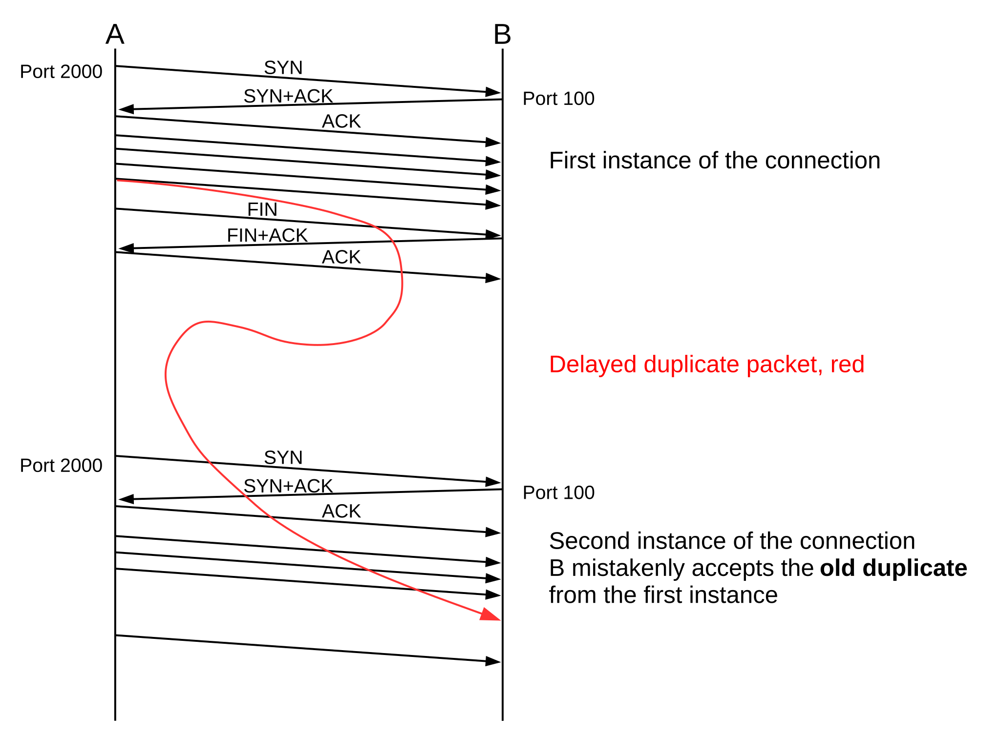
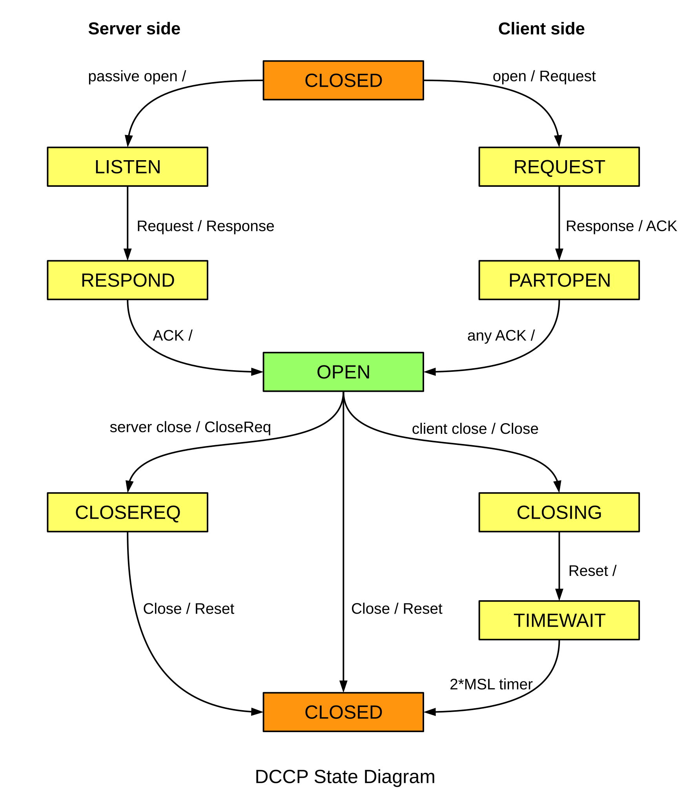
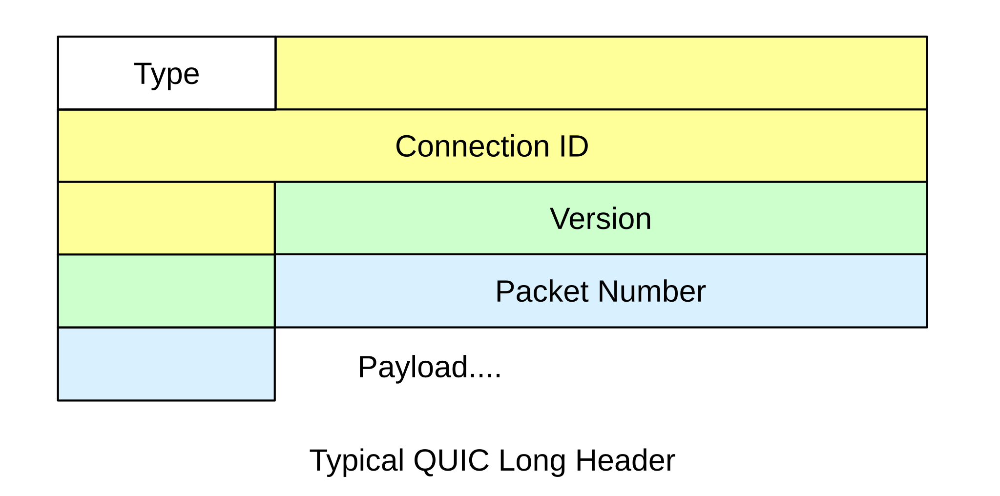

18 TCP Issues and Alternatives¶
In this chapter we cover some issues relating to TCP reliability, some technical issues relating to TCP efficiency, and finally some outright alternatives to TCP.
18.1 TCP Old Duplicates¶
Conceptually, perhaps the most serious threat facing the integrity of TCP data is external old duplicates (16.3 Fundamental Transport Issues), that is, very late packets from a previous instance of the connection. Suppose a TCP connection is opened between A and B. One packet from A to B is duplicated and unduly delayed, with sequence number N. The connection is closed, and then another instance is reopened, that is, a connection is created using the same ports. At some point in the second connection, when an arriving packet with seq=N would be acceptable at B, the old duplicate shows up. Later, of course, B is likely to receive a seq=N packet from the new instance of the connection, but that packet will be seen by B as a duplicate (even though the data does not match), and (we will assume) be ignored.

For TCP, it is the actual sequence numbers, rather than the relative sequence numbers, that would have to match up. The diagram above ignores that.
As with TFTP, coming up with a possible scenario accounting for the generation of such a late packet is not easy. Nonetheless, many of the design details of TCP represent attempts to minimize this risk.
Solutions to the old-duplicates problem generally involve setting an upper bound on the lifetime of any packet, the MSL, as we shall see in the next section. T/TCP (18.5 TCP Faster Opening) introduced a connection-count field for this.
TCP is also vulnerable to sequence-number wraparound: arrival of an old duplicates from the same instance of the connection. However, if we take the MSL to be 60 seconds, sequence-number wrap requires sending 232 bytes in 60 seconds, which requires a data-transfer rate in excess of 500 Mbps. TCP offers a fix for this (Protection Against Wrapped Segments, or PAWS), but it was introduced relatively late; we return to this in 18.4 Anomalous TCP scenarios.
18.2 TIMEWAIT¶
The TIMEWAIT state is entered by whichever side initiates the connection close; in the event of a simultaneous close, both sides enter TIMEWAIT. It is to last for a time 2×MSL, where MSL = Maximum Segment Lifetime is an agreed-upon value for the maximum lifetime on the Internet of an IP packet. Traditionally MSL was taken to be 60 seconds, but more modern implementations often assume 30 seconds (for a TIMEWAIT period of 60 seconds).
One function of TIMEWAIT is to solve the external-old-duplicates problem. TIMEWAIT requires that between closing and reopening a connection, a long enough interval must pass that any packets from the first instance will disappear. After the expiration of the TIMEWAIT interval, an old duplicate cannot arrive.
A second function of TIMEWAIT is to address the lost-final-ACK problem (16.3 Fundamental Transport Issues). If host A sends its final ACK to host B and this is lost, then B will eventually retransmit its final packet, which will be its FIN. As long as A remains in state TIMEWAIT, it can appropriately reply to a retransmitted FIN from B with a duplicate final ACK. As with TFTP, it is possible (though unlikely) for the final ACK to be lost as well as all the retransmitted final FINs sent during the TIMEWAIT period; should this happen, one side thinks the connection closed normally while the other side thinks it did not. See exercise 4.0.
TIMEWAIT only blocks reconnections for which both sides reuse the same port they used before. If A connects to B and closes the connection, A is free to connect again to B using a different port at A’s end.
Conceptually, a host may have many old connections to the same port simultaneously in TIMEWAIT; the host must thus maintain for each of its ports a list of all the remote ⟨IP_address,port⟩ sockets currently in TIMEWAIT for that port. If a host is connecting as a client, this list likely will amount to a list of recently used ports; no port is likely to have been used twice within the TIMEWAIT interval. If a host is a server, however, accepting connections on a standardized port, and happens to be the side that initiates the active close and thus later goes into TIMEWAIT, then its TIMEWAIT list for that port can grow quite long.
Generally, busy servers prefer to be free from these bookkeeping requirements of TIMEWAIT, so many protocols are designed so that it is the client that initiates the active close. In the original HTTP protocol, version 1.0, the server sent back the data stream requested by the http GET message (17.7.1 netcat again), and indicated the end of this stream by closing the connection. In HTTP 1.1 this was fixed so that the client initiated the close; this required a new mechanism by which the server could indicate “I am done sending this file”. HTTP 1.1 also used this new mechanism to allow the server to send back multiple files over one connection.
In an environment in which many short-lived connections are made from host A to the same port on server B, port exhaustion – having all ports tied up in TIMEWAIT – is a theoretical possibility. If A makes 1000 connections per second, then after 60 seconds it has gone through 60,000 available ports, and there are essentially none left. While this rate is high, early Berkeley-Unix TCP implementations often made only about 4,000 ports available to clients; with a 120-second TIMEWAIT interval, port exhaustion would occur with only 33 connections per second.
If you use ssh to connect to a server and then issue the netstat -a command on your own host (or, more conveniently, netstat -a |grep -i tcp), you should see your connection in ESTABLISHED state. If you close your connection and check again, your connection should be in TIMEWAIT.
18.3 The Three-Way Handshake Revisited¶
As stated earlier in 17.3 TCP Connection Establishment, both sides choose an ISN; actual sequence numbers are the sum of the sender’s ISN and the relative sequence number. There are two original reasons for this mechanism, and one later one (18.3.1 ISNs and spoofing). The original TCP specification, as clarified in RFC 1122, called for the ISN to be determined by a special clock, incremented by 1 every 4 microseconds.
The most basic reason for using ISNs is to detect duplicate SYNs. Suppose A initiates a connection to B by sending a SYN packet. B replies with SYN+ACK, but this is lost. A then times out and retransmits its SYN. B now receives A’s second SYN while in state SYN_RECEIVED. Does this represent an entirely new request (perhaps A has suddenly restarted), or is it a duplicate? If A uses the clock-driven ISN strategy, B can tell (almost certainly) whether A’s second SYN is new or a duplicate: only in the latter case will the ISN values in the two SYNs match.
While there is no danger to data integrity if A sends a SYN, restarts, and sends the SYN again as part of a reopening the same connection, the arrival of a second SYN with a new ISN means that the original connection cannot proceed, because that ISN is now wrong. The receiver of the duplicate SYN should drop any connection state it has recorded so far, and restart processing the second SYN from scratch.
The clock-driven ISN also originally added a second layer of protection against external old duplicates. Suppose that A opens a connection to B, and chooses a clock-based ISN N1. A then transfers M bytes of data, closed the connection, and reopens it with ISN N2. If N1 + M < N2, then the old-duplicates problem cannot occur: all of the absolute sequence numbers used in the first instance of the connection are less than or equal to N1 + M, and all of the absolute sequence numbers used in the second instance will be greater than N2.
Early Berkeley-Unix implementations of the socket library often allowed a second connection meeting the above ISN requirement to be reopened before TIMEWAIT would have expired; this potentially addressed the problem of port exhaustion. We might call this TIMEWAIT connection reuse. Of course, if the first instance of the connection transferred data faster than the ISN clock rate, that is at more than 250,000 bytes/sec, then N1 + M would be greater than N2, and TIMEWAIT would have to be enforced. But in the era in which TCP was first developed, sustained transfers exceeding 250,000 bytes/sec were not as common. Alternatively, the connection in TIMEWAIT might allow incoming connections that reuse the same ports, because in this case the host in TIMEWAIT can choose its own ISN to be greater than the final absolute sequence number of the previous instance of the connection. This second alternative is allowed by :rfc:1192:, §4.2.2.13.
The three-way handshake was extensively analyzed by Dalal and Sunshine in [DS78]. The authors noted that with a two-way handshake, the second side receives no confirmation that its ISN was correctly received. The authors also observed that a four-way handshake – in which the ACK of ISNA is sent separately from ISNB, as in the diagram below – could fail if one side restarted.
For this failure to occur, assume that after sending the SYN in line 1, with ISNA1, A restarts. The ACK in line 2 is either ignored or not received. B now sends its SYN in line 3, but A interprets this as a new connection request; it will respond after line 4 by sending a fifth, SYN packet containing a different ISNA2. For B the connection is now ESTABLISHED, and if B acknowledges this fifth packet but fails to update its record of A’s ISN, the connection will fail as A and B would have different notions of ISNA.
18.3.1 ISNs and spoofing¶
The clock-based ISN proved to have a significant weakness: it often allowed an attacker to guess the ISN a remote host might use. It did not help any that an early version of Berkeley Unix, instead of incrementing the ISN 250,000 times a second, incremented it once a second, by 250,000 (plus something for each connection). By guessing the ISN a remote host would choose, an attacker might be able to mimic a local, trusted host, and thus gain privileged access.
Specifically, suppose host A trusts its neighbor B, and executes with privileged status commands sent by B; this situation was typical in the era of the rhost command. A authenticates these commands because the connection comes from B’s IP address. The bad guy, M, wants to send packets to A so as to pretend to be B, and thus get a privileged command invoked. The connection only needs to be started; if the ruse is discovered after the command is executed, it is too late. M can easily send a SYN packet to A with B’s IP address in the source-IP field; M can probably temporarily disable B too, so that A’s SYN-ACK response, which is sent to B, goes unnoticed. What is harder is for M to figure out how to guess how to ACK ISNA. But if A generates ISNs with a slowly incrementing clock, M can guess the pattern of the clock with previous connection attempts, and can thus guess ISNA with a considerable degree of accuracy. So M sends SYN to A with B as source, A sends SYN-ACK to B containing ISNA, and M guesses this value and sends ACK(ISNA+1) to A, again with B listed in the IP header as source, followed by a single-packet command.
This TCP-layer IP-spoofing technique was first described by Robert T Morris in [RTM85]; Morris went on to launch the Internet Worm of 1988 using unrelated attacks. The IP-spoofing technique was used in the 1994 Christmas Day attack against UCSD, launched from Loyola’s own apollo.it.luc.edu; the attack was associated with Kevin Mitnick though apparently not actually carried out by him. Mitnick was arrested a few months later.
RFC 1948, in May 1996, introduced a technique for introducing a degree of randomization in ISN selection, while still ensuring that the same ISN would not be used twice in a row for the same connection. The ISN is to be the sum of the 4-µs clock, C(t), and a secure hash of the connection information as follows (compare with the local-port algorithm of 17.7 TCP and bind()):
ISN = C(t) + hash(local_addr, local_port, remote_addr, remote_port, secret_key)
The secret_key value is a random value chosen by the host on startup. While M, above, can poll A for its current ISN, and can probably guess the hash function and the first four parameters above, without knowing the key it cannot determine (or easily guess) the ISN value A would have sent to B. Legitimate connections between A and B using the same port at each end, on the other hand, see the ISN increasing at the 4-µs rate, which potentially increases the chance of successful application of “TIMEWAIT connection reuse” as in 18.3 The Three-Way Handshake Revisited.
RFC 5925 addresses spoofing and related attacks by introducing an optional TCP authentication mechanism: the TCP header includes an option containing a secure hash (28.6 Secure Hashes) of the rest of the TCP header and a shared secret key. The need for key management limits when this mechanism can be used; the classic use case is BGP connections between routers (15 Border Gateway Protocol (BGP)).
Another approach to the prevention of spoofing attacks is to ask sites and ISPs to refuse to forward outwards any IP packets with a source address not from within that site or ISP. If an attacker’s ISP implements this, the attacker will be unable to launch spoofing attacks against the outside world. A concrete proposal can be found in RFC 2827. Unfortunately, it has been (as of 2015) almost entirely ignored.
See also the discussion of SYN flooding at 17.3 TCP Connection Establishment, although that attack does not involve ISN manipulation.
18.4 Anomalous TCP scenarios¶
TCP, like any transport protocol, must address the transport issues in 16.3 Fundamental Transport Issues.
As we saw above, TCP addresses the Duplicate Connection Request (Duplicate SYN) issue by noting whether the ISN has changed. This is handled at the kernel level by TCP, versus TFTP’s application-level (and rather desultory) approach to handing Duplicate RRQs.
TCP addresses Loss of Final ACK through TIMEWAIT: as long as the TIMEWAIT period has not expired, if the final ACK is lost and the other side resends its final FIN, TCP will still be able to reissue that final ACK. TIMEWAIT in this sense serves a similar function to TFTP’s DALLY state.
External Old Duplicates, arriving as part of a previous instance of the connection, are prevented by TIMEWAIT, and may also be prevented by the use of a clock-driven ISN.
Internal Old Duplicates, from the same instance of the connection, that is, sequence number wraparound, is only an issue for bandwidths exceeding 500 Mbps: only at bandwidths above that can 4 GB be sent in one 60-second MSL. TCP implementations now address this with PAWS: Protection Against Wrapped Segments (RFC 1323). PAWS adds a 32-bit “timestamp option” to the TCP header. The granularity of the timestamp clock is left unspecified; one tick must be small enough that sequence numbers cannot wrap in that interval (eg less than 3 seconds for 10,000 Mbps), and large enough that the timestamps cannot wrap in time MSL. On Linux systems the timestamp clock granularity is typically 1 to 10 ms; measurements on the author’s systems have been 4 ms. With timestamps, an old duplicate due to sequence-number wraparound can now easily be detected.
The PAWS mechanism also requires ACK packets to echo back the sender’s timestamp, in addition to including their own. This allows senders to accurately measure round-trip times.
Reboots are a potential problem as the host presumably has no record of what aborted connections need to remain in TIMEWAIT. TCP addresses this on paper by requiring hosts to implement Quiet Time on Startup: no new connections are to be accepted for 1*MSL. No known implementations actually do this; instead, they assume that the restarting process itself will take at least one MSL. This is no longer as certain as it once was, but serious consequences have not ensued.
18.5 TCP Faster Opening¶
If a client wants to connect to a server, send a request and receive an immediate reply, TCP mandates one full RTT for the three-way handshake before data can be delivered. This makes TCP one RTT slower than UDP-based request-reply protocols. There have been periodic calls to allow TCP clients to include data with the first SYN packet and have it be delivered immediately upon arrival – this is known as accelerated open.
If there will be a series of requests and replies, the simplest way to deliver the data without a handshake delay is to pipeline all the requests and replies over one persistent connection; the handshake delay then applies only to the first request. If the pipeline connection is idle for a long-enough interval, it may be closed, and then reopened later if necessary.
An early accelerated-open proposal was T/TCP, or TCP for Transactions, specified in RFC 1644. T/TCP introduced a connection count TCP option, called CC; each participant would include a 32-bit CC value in its SYN; each participant’s own CC values were to be monotonically increasing. Accelerated open was allowed if the server side had the client’s previous CC in a cache, and the new CC value was strictly greater than this cached value. This ensured that the new SYN was not a duplicate of an older SYN.
Unfortunately, this also bypasses the duplicate-SYN detection and modest validation of the client’s IP address provided by the full three-way handshake, worsening the spoofing problem of 18.3.1 ISNs and spoofing. If malicious host M wants to pretend to be B when sending a privileged request to A, all M has to do is send a single SYN+Data packet with an extremely large value for CC. Generally, the accelerated open succeeded as long as the CC value presented was larger that the value A had cached for B; it did not have to be larger by exactly 1.
18.5.1 TCP Fast Open¶
The TCP Fast Open (TFO) mechanism, described in RFC 7413, involves a secure “cookie” sent by the client as a TCP option; if a SYN+Data packet has a valid cookie, then the client has satisfactorily established its identity and the data may be released immediately to the receiving application.
Cookies can be either 4 or 16 bytes (probably, though not necessarily, corresponding to IPv4 and IPv6), and are requested by the client through a previous TCP handshake with a cookie-request option in the SYN packet. If a client includes a still-valid cookie in the SYN packet of a subsequent connection, the data accompanying that SYN packet is immediately released by the server to the application; the three-way handshake still completes but the data does not wait for it.
The same cookie can be reused multiple times. Cookies do have an expiration time, though, and also they are specific to the client IP address (though not to the TCP ports used). One implementation option is for the server to use encryption (not hashing) of the client IP address; in this model the cookie expires when the encryption key expires.
Because cookies must be requested ahead of time, TCP Fast Open is not fundamentally faster than the connection-pipeline option above, except that holding a TCP connection open uses more resources than simply storing a cookie. One likely application for TCP Fast Open is in accessing web servers. Web clients and servers already keep a persistent connection open for a while, but often “a while” here amounts only to several seconds; TCP Fast Open cookies could remain active for much longer. Another potential use is for TCP-based DNS queries, for which there is no established mechanism for connection reuse.
A serious practical problem with TCP Fast Open is that some middleboxes (9.7.2 Middleboxes) remove TCP options they do not understand, or even block the connection attempt entirely. One consequence of this is that clients attempting to use TFO must log failures, and not attempt to reuse TFO again (at least for an appropriate time interval).
Also, SYN flooding attacks are still possible; for example, a large number of compromised clients can obtain cookies legitimately, and then each reuse their cookie many times in short order. Alternatively, the cookie from one client can be distributed to a large number of other hosts which then spoof the original client’s IP address. To minimize the impact of such attacks, TFO requires that the fast-open option be ignored if the number of pending fast opens exceeds a given threshold. Connections would still open normally, but data would not be delivered to the server application until the three-way handshake completed.
Finally, TFO does introduce a small possibility of duplicate data delivery. Consider, for example, the following sequence:
- Then client sends a SYN with valid TFO cookie, and some data
- The ACK from the server is lost, or is never sent
- The server processes the data
- The server reboots
- The client times out, and retransmits its SYN+cookie+data, which arrives at the server
The duplicate data arriving in the final step will be again processed by the server. This is not likely, but if either the client or the server cannot handle the possibility of duplication, then TFO should not be used. In particular, it must be possible to enable or disable TFO on a per-connection basis. Of course, if the request conveyed by the SYN+data is idempotent (16.5.2 Sun RPC), the duplication should not matter.
An alternative duplicate-data-delivery scenario involves the client sending a SYN+cookie+data packet and closing the connection. The client, then, goes into TIMEWAIT, but not the server. Meanwhile, the SYN+cookie+data packet somehow gets duplicated within the network, and this duplicate arrives at the server. This scenario (unlike the first) is not prevented by arranging for the server’s cookie-generation key to become invalid after a reboot.
18.6 Path MTU Discovery¶
TCP connections are more efficient if they can keep large packets flowing between the endpoints. Once upon a time, TCP endpoints included just 512 bytes of data in each packet that was not destined for local delivery, to avoid fragmentation. TCP endpoints now typically engage in Path MTU Discovery which almost always allows them to send larger packets; backbone ISPs are now usually able to carry 1500-byte packets. The Path MTU is the largest packet size that can be sent along a path without fragmentation.
The IPv4 strategy is to send an initial data packet with the IPv4 DONT_FRAG bit set. If the ICMP message Frag_Required/DONT_FRAG_Set comes back, or if the packet times out, the sender tries a smaller size. If the sender receives a TCP ACK for the packet, on the other hand, indicating that it made it through to the other end, it might try a larger size. Usually, the size range of 512-1500 bytes is covered by less than a dozen discrete values; the point is not to find the exact Path MTU but to determine a reasonable approximation rapidly.
IPv6 has no DONT_FRAG bit. Path MTU Discovery over IPv6 involves the periodic sending of larger packets; if the ICMPv6 message Packet Too Big is received, a smaller packet size must be used. RFC 1981 has details.
18.7 TCP Sliding Windows¶
TCP implements sliding windows, in order to improve throughput. Window sizes are measured in terms of bytes rather than packets; this leaves TCP free to packetize the data in whatever segment size it elects. In the initial three-way handshake, each side specifies the maximum window size it is willing to accept, in the Window Size field of the TCP header. This 16-bit field can only go to 64 kB, and a 1 Gbps × 100 ms bandwidth×delay product is 12 MB; as a result, there is a TCP Window Scale option that can also be negotiated in the opening handshake. The scale option specifies a power of 2 that is to be multiplied by the actual Window Size value. In the WireShark example above, the client specified a Window Size field of 5888 (= 4 × 1472) in the third packet, but with a Window Scale value of 26 = 64 in the first packet, for an effective window size of 64 × 5888 = 256 segments of 1472 bytes. The server side specified a window size of 5792 and a scaling factor of 25 = 32.
TCP may either transmit a bulk stream of data, using sliding windows fully, or it may send slowly generated interactive data; in the latter case, TCP may never have even one full segment outstanding.
In the following chapter we will see that a sender frequently reduces the actual TCP window size, in order to avoid congestion; the window size included in the TCP header is known as the Advertised Window Size. On startup, TCP does not send a full window all at once; it uses a mechanism called “slow start”.
18.8 TCP Delayed ACKs¶
TCP receivers are allowed briefly to delay their ACK responses to new data. This offers perhaps the most benefit for interactive applications that exchange small packets, such as ssh and telnet. If A sends a data packet to B and expects an immediate response, delaying B’s ACK allows the receiving application on B time to wake up and generate that application-level response, which can then be sent together with B’s ACK. Without delayed ACKs, the kernel layer on B may send its ACK before the receiving application on B has even been scheduled to run. If response packets are small, that doubles the total traffic. The maximum ACK delay is 500 ms, according to RFC 1122 and RFC 2581, though 200 ms is more common.
For bulk traffic, delayed ACKs simply mean that the ACK traffic volume is reduced. Because ACKs are cumulative, one ACK from the receiver can in principle acknowledge multiple data packets from the sender. Unfortunately, acknowledging too many data packets with one ACK can interfere with the self-clocking aspect of sliding windows; the arrival of that ACK will then trigger a burst of additional data packets, which would otherwise have been transmitted at regular intervals. Because of this, the RFCs above specify that an ACK be sent, at a minimum, for every other data packet. For a discussion of how the sender should respond to delayed ACKs, see 19.2.1 TCP Reno Per-ACK Responses.
The TCP ACK-delay time can usually be adjusted globally as a system parameter. Linux offers a TCP_QUICKACK option, as a flag to setsockopt(), to disable delayed ACKs on a per-connection basis, but only until the next TCP system call (including reads and writes). It must be invoked immediately after every receive operation to disable delayed ACKs entirely. This option is also not very portable.
The TSO option of 17.5 TCP Offloading, used at the receiver, can also reduce the number of ACKs sent. If every two arriving data packets are consolidated via TSO into a single packet, then the receiver will appear to the sender to be acknowledging every other data packet. The ACK delay introduced by TSO is, however, usually quite small.
18.9 Nagle Algorithm¶
Like delayed ACKs, the Nagle algorithm (RFC 896) also attempts to improve the behavior of interactive small-packet applications. It specifies that a TCP endpoint generating small data segments – segments of less than the maximum size – should queue them until either it accumulates a full segment’s worth or receives an ACK for all the previously sent packets (small or not). If the full-segment threshold is not reached at the sender, this means that only one segment will be sent per RTT, containing all the data generated during that RTT.
As an example, suppose A wishes to send to B packets containing consecutive letters, starting with “a”. The application on A generates these every 100 ms, but the RTT is 501 ms. At T=0, A transmits “a”. The application on A continues to generate “b”, “c”, “d”, “e” and “f” at times 100 ms through 500 ms, but A does not send them immediately. At T=501 ms, ACK(“a”) arrives; at this point A transmits its backlogged “bcdef”. The ACK for this arrives at T=1002, by which point A has queued “ghijk”. The end result is that A sends a fifth as many separate packets as it would without the Nagle algorithm. If these letters are generated by a user typing them with telnet, and the ACKs also include the echoed responses, then if the user pauses the echoed responses will very soon catch up.
The Nagle algorithm does not always interact well with delayed ACKs. If an application generates a 2 KB transaction that is divided between a full-sized packet and a followup small packet, then the Nagle algorithm means that the second packet cannot be sent until the first is acknowledged. However, a receiver using delayed ACKs may wait up to 500 ms to send the ACK that allows that second packet to be sent. This delays the entire transaction by the delayed-ACK time. Worse, this may happen to every one of a lengthy series of transactions. Internet Draft A Proposed Modification to Nagle’s Algorithm addresses this by, in effect, always allowing senders to send one small packet without receiving an acknowledgment, to compensate for the possibility that a delayed-ACK receiver will need to receive that one small packet before it sends its ACK. More specifically, the modification is to forbid the sending of small packets as long as there is an earlier unacknowledged small packet outstanding, versus the original rule forbidding the sending of small packets as long as there are any earlier unacknowledged packets, small or not.
For other examples, see exercises 1.0 and 2.0; the first is an example of how the Nagle algorithm can have surprising user-interface consequences. The Nagle algorithm can usually be disabled on a per-connection basis, in the BSD socket library by calling setsockopt() with the TCP_NODELAY flag.
18.10 TCP Flow Control¶
It is possible for a TCP sender to send data faster than the receiver can process it. When this happens, a TCP receiver may reduce the advertised Window Size value of an open connection, thus informing the sender to switch to a smaller window size. This provides support for flow control.
The window-size reduction appears in the ACKs sent back by the receiver. A given ACK is not supposed to reduce the window size by so much that the upper end of the window gets smaller. A window might shrink from the byte range [20,000..28,000] to [22,000..28,000] but never to [20,000..26,000].
If a TCP receiver uses this technique to shrink the advertised window size to 0, this means that the sender may not send data. The receiver has thus informed the sender that, yes, the data was received, but that, no, more may not yet be sent. This corresponds to the ACKWAIT suggested in 8.1.3 Flow Control. Eventually, when the receiver is ready to receive data, it will send an ACK increasing the advertised window size again.
If the TCP sender has its window size reduced to 0, and the ACK from the receiver increasing the window is lost, then the connection would be deadlocked. TCP has a special feature specifically to avoid this: if the window size is reduced to zero, the sender sends dataless packets to the receiver, at regular intervals. Each of these “polling” packets elicits the receiver’s current ACK; the end result is that the sender will receive the eventual window-enlargement announcement reliably. These “polling” packets are regulated by the so-called persist timer.
18.11 Silly Window Syndrome¶
The silly-window syndrome is a term for a scenario in which TCP transfers only small amounts of data at a time. Because TCP/IP packets have a minimum fixed header size of 40 bytes, sending small packets uses the network inefficiently. The silly-window syndrome can occur when either by the receiving application consuming data slowly or when the sending application generating data slowly.
As an example involving a slow-consuming receiver, suppose a TCP connection has a window size of 1000 bytes, but the receiving application consumes data only 10 bytes at a time, at intervals about equal to the RTT. The following can then happen:
- The sender sends bytes 1-1000. The receiving application consumes 10 bytes, numbered 1-10. The receiving TCP buffers the remaining 990 bytes and sends an ACK reducing the window size to 10, per 18.10 TCP Flow Control.
- Upon receipt of the ACK, the sender sends 10 bytes numbered 1001-1010, the most it is permitted. In the meantime, the receiving application has consumed bytes 11-20. The window size therefore remains at 10 in the next ACK.
- the sender sends bytes 1011-1020 while the application consumes bytes 21-30. The window size remains at 10.
The sender may end up sending 10 bytes at a time indefinitely. This is of no benefit to either side; the sender might as well send larger packets less often. The standard fix, set forth in RFC 1122, is for the receiver to use its ACKs to keep the window at 0 until it has consumed one full packet’s worth (or half the window, for small window sizes). At that point the sender is invited – by an appropriate window-size advertisement in the next ACK – to send another full packet of data.
The silly-window syndrome can also occur if the sender is generating data slowly, say 10 bytes at a time. The Nagle algorithm, above, can be used to prevent this, though for interactive applications sending small amounts of data in separate but closely spaced packets may actually be useful.
18.12 TCP Timeout and Retransmission¶
When TCP sends a packet containing user data (this excludes ACK-only packets), it sets a timeout. If that timeout expires before the packet data is acknowledged, it is retransmitted. Acknowledgments are sent for every arriving data packet (unless Delayed ACKs are implemented, 18.8 TCP Delayed ACKs); this amounts to receiver-side retransmit-on-duplicate of 8.1.1 Packet Loss. Because ACKs are cumulative, and so a later ACK can replace an earlier one, lost ACKs are seldom a problem.
For TCP to work well for both intra-server-room and trans-global connections, with RTTs ranging from well under 1 ms to close to 1 second, the length of the timeout interval must adapt. TCP manages this by maintaining a running estimate of the RTT, EstRTT. In the original version, TCP then set TimeOut = 2×EstRTT (in the literature, the TCP TimeOut value is often known as RTO, for Retransmission TimeOut). EstRTT itself was a running average of periodically measured SampleRTT values, according to
EstRTT = 𝛼×EstRTT + (1-𝛼)×SampleRTT
for a fixed 𝛼, 0<𝛼<1. Typical values of 𝛼 might be 𝛼=1/2 or 𝛼=7/8. For 𝛼 close to 1 this is “conservative” in that EstRTT is slow to change. For 𝛼 closer to 0, EstRTT is more volatile.
There is a potential RTT measurement ambiguity: if a packet is sent twice, the ACK received could be in response to the first transmission or the second. The Karn/Partridge algorithm resolves this: on packet loss (and retransmission), the sender
- Doubles Timeout
- Stops recording SampleRTT
- Uses the doubled Timeout as EstRTT when things resume
Setting TimeOut = 2×EstRTT proved too short during congestion periods and too long other times. Jacobson and Karels ([JK88]) introduced a way of calculating the TimeOut value based on the statistical variability of EstRTT. After each SampleRTT value was collected, the sender would also update EstDeviation according to
SampleDev = | SampleRTT − EstRTT |EstDeviation = 𝛽×EstDeviation + (1-𝛽)×SampleDev
for a fixed 𝛽, 0<𝛽<1. Timeout was then set to EstRTT + 4×EstDeviation. EstDeviation is an estimate of the so-called mean deviation; 4 mean deviations corresponds (for normally distributed data) to about 5 standard deviations. If the SampleRTT values were normally distributed (which they are not), this would mean that the chance that a non-lost packet would arrive outside the TimeOut period is vanishingly small.
For further details, see [JK88] and [AP99].
In most implementations, a TCP sender maintains just one retransmission timer no matter how many packets are outstanding. Here is the recommended timer-management algorithm, from RFC 6298:
- If a packet is sent and the timer is not running, restart it for time Timeout.
- If an ACK arrives that acknowledges all outstanding data, turn off the timer.
- If an ACK arrives that acknowledges new data, but not all outstanding data, reset the timer to time Timeout.
If the sender transmits a steady stream of packets, none of which is lost, the last clause will ensure that the timer never fires, which is as desired. However, if a series of earlier ACKs arrives slowly, but just fast enough to keep resetting the timer, a lost packet may not time out until some multiple of Timeout has elapsed; while not ideal, this is not considered serious. See exercise 6.0.
18.13 KeepAlive¶
There is no reason that a TCP connection should not be idle for a long period of time; ssh/telnet connections, for example, might go unused for days. However, there is the turned-off-at-night problem: a workstation might telnet into a server, and then be shut off (not shut down gracefully) at the end of the day. The connection would now be half-open, but the server would not generate any traffic and so might never detect this; the connection itself would continue to tie up resources.
To avoid this, TCP supports an optional KeepAlive mechanism: each side “polls” the other with a dataless packet. The original RFC 1122 KeepAlive timeout was 2 hours, but this could be reduced to 15 minutes. If a connection failed the KeepAlive test, it would be closed.
Supposedly, some TCP implementations are not exactly RFC 1122-compliant: either KeepAlives are enabled by default, or the KeepAlive interval is much smaller than called for in the specification.
18.14 TCP timers¶
To summarize, TCP maintains the following four kinds of timers. All of them can be maintained by a single timer list, above.
- TimeOut: a per-segment timer; TimeOut values vary widely
- 2×MSL TIMEWAIT: a per-connection timer
- Persist: the timer used to poll the receiving end when winsize = 0
- KeepAlive, above
18.15 Variants and Alternatives¶
One alternative to TCP is UDP with programmer-implemented timout and retransmission; many RPC implementations (16.5 Remote Procedure Call (RPC)) do exactly this, with reasonable results. Within a LAN a static timeout of around half a second usually works quite well (unless the LAN has some tunneled links), and implementation of a simple timeout-retransmission mechanism is quite straightforward, although implementing adaptive timeouts as in 18.12 TCP Timeout and Retransmission is a bit more complex. QUIC (16.1.1 QUIC) is an example of this strategy.
We here consider four other protocols. The first, MPTCP, is based on TCP itself. The second, SCTP, is a message-oriented alternative to TCP that is an entirely separate protocol. The last two, DCCP and QUIC, are attempts to create a TCP-like transport layer on top of UDP.
18.15.1 MPTCP¶
Multipath TCP, or MPTCP, allows connections to use multiple network interfaces on a host, either sequentially or simultaneously. MPTCP architectural principles are outlined in RFC 6182; implementation details are in RFC 6824.
To carry the actual traffic, MPTCP arranges for the creation of multiple standard-TCP subflows between the sending and receiving hosts; these subflows typically connect between different pairs of IP addresses on the respective hosts.
For example, a connection to a server can start using the client’s wired Ethernet interface, and continue via Wi-Fi after the user has unplugged. If the client then moves out of Wi-Fi range, the connection might continue via a mobile network. Alternatively, MPTCP allows the parallel use of multiple Ethernet interfaces on both client and server for higher throughput.
MPTCP officially forbids the creation of multiple TCP connections between a single pair of interfaces in order to simulate Highspeed TCP (22.5 Highspeed TCP); RFC 6356 spells out an MWTCP congestion-control algorithm to enforce this.
Suppose host A, with two interfaces with IP addresses A1 and A2, wishes to connect to host B with IP addresses B1 and B2. Connection establishment proceeds via the ordinary TCP three-way handshake, between one of A’s IP addresses, say A1, and one of B’s, B1. The SYN packets must each carry the MP_CAPABLE TCP option, to signal one another that MPTCP is supported. As part of the MP_CAPABLE option, A and B also exchange pseudorandom 64-bit connection keys, sent unencrypted; these will be used to sign later messages as in 28.6.1 Secure Hashes and Authentication. This first connection is the initial subflow.
Once the MPTCP initial subflow has been established, additional subflow connections can be made. Usually these will be initiated from the client side, here A, though the B side can also do this. At this point, however, A does not know of B’s address B2, so the only possible second subflow will be from A2 to B1. New subflows will carry the MP_JOIN option with their initial SYN packets, along with digital signatures signed by the original connection keys verifying that the new subflow is indeed part of this MPTCP connection.
At this point A and B can send data to one another using both connections simultaneously. To keep track of data, each side maintains a 64-bit data sequence number, DSN, for the data it sends; each side also maintains a mapping between the DSN and the subflow sequence numbers. For example, A might send 1000-byte blocks of data alternating between the A1 and A2 connections; the blocks might have DSN values 10000, 11000, 12000, 13000, …. The A1 subflow would then carry blocks 10000, 12000, etc, numbering these consecutively (perhaps 20000, 21000, …) with its own sequence numbers. The sides exchange DSN mapping information with a DSS TCP option. This mechanism means that all data transmitted over the MWTCP connection can be delivered in the proper order, and that if one subflow fails, its data can be retransmitted on another subflow.
B can inform A of its second IP address, B2, using the ADD_ADDR option. Of course, it is possible that B2 is not directly reachable by A; for example, it might be behind a NAT router. But if B2 is reachable, A can now open two more subflows A1──B2 and A2──B2.
All the above works equally well if either or both of A’s addresses is behind a NAT router, simply because the NAT router is able to properly forward the subflow TCP connections. Addresses sent from one host to another, such as B’s transmission of its address B2, may be rendered invalid by NAT, but in this case A’s attempt to open a connection to B2 simply fails.
Generally, hosts can be configured to use multiple subflows in parallel, or to use one interface only as a backup, when the primary interface is unplugged or out of range. APIs have been proposed that allow an control over MPTCP behavior on a per-connection basis.
18.15.2 SCTP¶
The Stream Control Transmission Protocol, SCTP, is an entirely separate protocol from TCP, running directly above IP. It is, in effect, a message-oriented alternative to TCP: an application writes a sequence of messages and SCTP delivers each one as a unit, fragmenting and reassembling it as necessary. Like TCP, SCTP is connection-oriented and reliable. SCTP uses a form of sliding windows, and, like TCP, adjusts the window size to manage congestion.
An SCTP connection can support multiple message streams; the exact number is negotiated at startup. A retransmission delay in one stream never blocks delivery in other streams. Within each stream, SCTP messages are sequentially numbered, and are normally delivered in order of message number. A receiver can request, however, to receive messages immediately upon successful delivery, that is, potentially out of order. Either way, the data within each message is guaranteed to be delivered in order and without loss.
Internally, message data is divided into SCTP chunks for inclusion in packets. One SCTP packet can contain data chunks from different messages and different streams; packets can also contain control chunks.
Messages themselves can be quite large; there is no set limit. Very large messages may need to be received in multiple system calls (eg calls to recvmsg()).
SCTP supports an MPTCP-like feature by which each endpoint can use multiple network interfaces.
SCTP connections are set up using a four-way handshake, versus TCP’s three-way handshake. The extra packet provides some protection against so-called SYN flooding (17.3 TCP Connection Establishment). The central idea is that if client A initiates a connection request with server B, then B allocates no resources to the connection until after B has received a response to its own message to A. This means that, at a minimum, A is a real host with a real IP address.
The full four-way handshake between client A and server B is, in brief, as follows:
- A sends B an INIT chunk (corresponding to SYN), along with a pseudorandom TagA.
- B sends A an
INIT ACK, with TagB and a state cookie. The state cookie contains all the information B needs to allocate resources to the connection, and is digitally signed (28.6.1 Secure Hashes and Authentication) with a key known only to B. Crucially, B does not at this point allocate any resources to the incipient connection. - A returns the state cookie to B in a
COOKIE ECHOpacket. - B enters the ESTABLISHED state and sends a
COOKIE ACKto A. Upon receipt, A enters the ESTABLISHED state.
When B receives the COOKIE ECHO, it verifies the signature. At this point B knows that it sent the cookie to A and received a response, so A must exist. Only then does B allocate memory resources to the connection. Spoofed INITs in the first step cost B essentially nothing.
The TagA and TagB in the first two packets are called verification tags. From this point on, B will include TagA in every packet it sends to A, and vice-versa. Although these tags are sent unencrypted, they nonetheless make it much harder for an attacker to inject data into the connection.
Data can be included in the third and fourth packets above; ie A can begin sending data after one RTT.
Unfortunately for potential SCTP applications, few if any NAT routers recognize SCTP; this limits the use of SCTP to Internet paths along which NAT is not used. In principle SCTP could simplify delivery of web pages, transmitting one page component per message, but lack of NAT support makes this infeasible. SCTP is also blocked by some middleboxes (9.7.2 Middleboxes) on the grounds that it is an unknown protocol, and therefore suspect. While this is not quite as common as the NAT problem, it is common enough to prevent by itself the widespread adoption of SCTP in the general Internet. SCTP is widely used for telecommunications signaling, both within and between providers, where NAT and recalcitrant middleboxes can be banished.
18.15.3 DCCP¶
As we saw in 16.1.2 DCCP, DCCP is a UDP-based transport protocol that supports, among other things, connection establishment. While it is used much less often than TCP, it provides an alternative example of how transport can be done.
DCCP defines a set of distinct packet types, rather than TCP’s independent packet flags; this disallows unforeseen combinations such as TCP SYN+RST. Connection establishment involves Request and Respond; data transmission involves Data, ACK and DataACK, and teardown involves CloseReq, Close and Reset. While one cannot have, for example, a Respond+ACK, Respond packets do carry an acknowledgment field.
Like TCP, DCCP uses a three-way handshake to open a connection; here is a diagram:
The OPEN state corresponds to TCP’s ESTABLISHED state. Like TCP, each side chooses an ISN (not shown in the diagram). Because packet delivery is not reliable, and because ACKs are not cumulative, the client remains in PARTOPEN state until it has confirmed that the server has received its ACK of the server’s Response. While in state PARTOPEN, the client can send ACK and DataACK but not ACK-less Data packets.
Packets are numbered sequentially. The numbering includes all packets, not just Data packets, and is by packet rather than by byte.
The DCCP state diagram is shown below. It is simpler than the TCP state diagram because DCCP does not support simultaneous opens.

To close a connection, one side sends Close and the other responds with Reset. Reset is used for normal close as well as for exceptional conditions. Because whoever sends the Close is then stuck with TIMEWAIT, the server side may send CloseReq to ask the client to send Close.
There are also two special packet formats, Sync and SyncAck, for resynchronizing sequence numbers after a burst of lost packets.
The other major TCP-like feature supported by DCCP is congestion control; see 21.3.3 DCCP Congestion Control.
18.15.4 QUIC Revisited¶
Like DCCP, QUIC (see also 16.1.1 QUIC) is a UDP-based transport protocol, aimed rather squarely at HTTP plus TLS (29.5.2 TLS). The fundamental goal of QUIC is to provide TLS encryption protection with as little overhead as possible, in a manner that competes fairly with TCP in the presence of congestion. Opening a QUIC connection, encryption included, takes a single RTT. QUIC can also be seen, however, as a complete rewrite of TCP from the ground up; a reading of specific features sheds quite a bit of light on how the corresponding TCP features have fared over the past thirty-odd years. As of 2021, QUIC was finally edited to RFC status:
- RFC 8999: Version-independent Properties of QUIC
- RFC 9000: QUIC: A UDP-Based Multiplexed and Secure Transport (good overview)
- RFC 9001: Using TLS to Secure QUIC
- RFC 9002: QUIC Loss Detection and Congestion Control
- RFC 9114: HTTP/3 (which uses QUIC)
The move to base HTTP/3 on QUIC began officially in 2018; RFC 9114 was published in June 2022. QUIC’s standardization may represent the beginning of the end for TCP, given that most Internet connections are for HTTP or HTTPS. Still, many TCP design issues (19 TCP Reno and Congestion Management, 20 Dynamics of TCP, 22 Newer TCP Implementations) carry over very naturally to QUIC; a shift from TCP to QUIC should best be viewed as evolutionary. (And, by the same token, the 1995 standardization of IPv6 presumably represents the beginning of the end for IPv4, but that was over 25 years ago.)
The design of QUIC was influenced by the fate of SCTP above; the latter, as a new protocol above IP, was often blocked by overly security-conscious middleboxes (9.7.2 Middleboxes).
The fact that the QUIC layer resides within an application (or within a library) rather than within the kernel has meant that QUIC is able to evolve much faster than TCP. The long-term consequences of having the transport layer live outside the kernel are not yet completely clear, however; it may, for example, make it easier for users to install unfair congestion-management schemes.
18.15.4.1 Headers¶
We will start with the QUIC header. While there are some alternative forms, the basic header is diagrammed below, with a 1-byte Type field, an 8-byte Connection ID, and 4-byte Version and Packet Number fields.

Perhaps the most striking thing about this header is that 4-byte alignment – used consistently in the IPv4, IPv6, UDP and TCP headers – has been completely abandoned. On most contemporary processors, the performance advantages of alignment are negligible; see the last paragraph at 9.1 The IPv4 Header.
IP packets are identified as such by the Ethernet type field, and TCP and UDP packets are identified as such by the IPv4-header Protocol field. But QUIC packets are not identified as such by any flag in the preceding IP or UDP headers; there is in fact no place in those headers for a QUIC marker to go. QUIC appears to an observer as just another form of UDP traffic. This acts as a form of middlebox defense; QUIC packets cannot be identified as such in isolation. WireShark, sidebar below, identifies QUIC packets by looking at the whole history of the connection, and even then must make some (educated) guesses. Middleboxes could do that too, but it would take work.
The initial Connection ID consists of 64 random bits chosen by the client. The server, upon accepting the connection, may change the Connection ID; at that point the Connection ID is fixed for the lifetime of the connection. The Connection ID may be omitted for packets whose connection can be determined from the associated IP address and port values; this is signaled by the Type field. The Connection ID can also be used to migrate a connection to a different IP address and port, as might happen if a mobile device moves out of range of Wi-Fi and the mobile-data plan continues the communication. This may also happen if a connection passes through a NAT router. The NAT forwarding entry may time out (see the comment on UDP and inactivity at 9.7 Network Address Translation), and the connection may be assigned a different outbound UDP port if it later resumes. QUIC uses the Connection ID to recognize that the reassigned connection is still the same one as before.
The Version field gets dropped as soon as the version is negotiated. As part of the version negotiation, a packet might have multiple version fields. Such packets put a random value into the low-order seven bits of the Type field, as a prevention against middleboxes’ blocking unknown types. This way, aggressive middlebox behavior should be discovered early, before it becomes widespread.
The packet number can be reduced to one or two bytes once the connection is established; this is signaled by the Type field. Internally, QUIC uses packet numbers in the range 0 to 262; these internal numbers are not allowed to wrap around. The low-order 32 bits (or 16 bits or 8 bits) of the internal number are what is transmitted in the packet header. A packet receiver infers the high-order bits from the most recent acknowledgment.
The initial packet number is to be chosen randomly in the range 0 to 232−1025. This corresponds to TCP’s use of Initial Sequence Numbers.
Use of 16-bit or 8-bit transmitted packet numbers is restricted to cases where there can be no ambiguity. At a minimum, this means that the number of outstanding packets (the QUIC winsize) cannot exceed 27−1 for 8-bit packet numbering or 215−1 for 16-bit packet numbering. These maximum winsizes represent the ideal case where there is no packet reordering; smaller values are likely to be used in practice. (See 8.5 Exercises, exercise 9.0.)
18.15.4.2 Frames and streams¶
Data in a QUIC packet is partitioned into one or more frames. Each frame’s data is prefixed by a simple frame header indicating its length and type. Some frames contain management information; frames containing higher-layer data are called STREAM frames. Each frame must be fully contained in one packet.
The application’s data can be divided into multiple streams, depending on the application requirements. This is particularly useful with HTTP, as a client may request a large number of different resources (html, images, javascript, etc) simultaneously. Stream data is contained in STREAM frames. Streams are numbered, with Stream 0 reserved for the TLS cryptographic handshake. The HTTP/2 protocol has introduced its own notion of streams; these map neatly onto QUIC streams.
The two low-order bits of each stream number indicate whether the stream was initiated by the client or by the server, and whether it is bi- or uni-directional. This design decision means that either side can create a stream and send data on it immediately, without negotiation; this is important for reducing unnecessary RTTs.
Each individual stream is guaranteed in-order delivery, but there are no ordering guarantees between different streams. Within a packet, the data for a particular stream is contained in a frame for that stream.
One packet can contain stream frames for multiple streams. However, if a packet is lost, streams that have frames contained in that packet are blocked until retransmission. Other streams can continue without interruption. This creates an incentive for keeping separate streams in separate packets.
Stream frames contain the byte offset of the frame’s block of stream data (starting from 0), to enable in-order stream reassembly. TCP, as we have seen, uses this byte-numbering approach exclusively, though starting with the Initial Sequence Number rather than zero. QUIC’s stream-level numbering by byte is unrelated to its top-level numbering by packet.
In addition to stream frames, there are a large number of management frames. Here are a few of them:
RST_STREAM: like TCP RST, but for one stream only.MAX_DATA: this corresponds to the TCP advertised window size. As with TCP, it can be reduced to zero to pause the flow of data and thereby implement flow control. There is also a similarMAX_STREAM_DATA, applying per stream.PINGandPONG: to verify that the other endpoint is still responding. These serve as the equivalent of TCP KEEPALIVEs, among other things.CONNECTION_CLOSEandAPPLICATION_CLOSE: these initiate termination of the connection; they differ only in that aCONNECTION_CLOSEmight be accompanied by a QUIC-layer error or explanation message while anAPPLICATION_CLOSEmight be accompanied by, say, an HTTP error/explanation messge.PAD: to pad out the packet to a larger size.ACK: for acknowledgments, below.
18.15.4.3 Acknowledgments¶
QUIC assigns a new, sequential packet number (the Packet ID) to every packet, including retransmissions. TCP, by comparison, assigns sequence numbers to each byte. (QUIC stream frames do number data by byte, as noted above.)
Lost QUIC packets are retransmitted, but with a new packet number. This makes it impossible for a receiver to send cumulative acknowledgments, as lost packets will never be acknowledged. The receiver handles this as below. At the sender side, the sender maintains a list of packets it has sent that are both unacknowledged and also not known to be lost. These represent the packets in flight. When a packet is retransmitted, its old packet number is removed from this list, as lost, and the new packet number replaces it.
To the extent possible given this retransmission-renumbering policy, QUIC follows the spirit of sliding windows. It maintains a state variable bytes_in_flight, corresponding to TCP’s winsize, listing the total size of all the packets in flight. As with TCP, new acknowledgments allow new transmissions.
Acknowledgments themselves are sent in special acknowledgment frames. These begin with the number of the highest packet received. This is followed by a list of pairs, as long as will fit into the frame, consisting of the length of the next block of contiguous packets received followed by the length of the intervening gap of packets not received. The TCP Selective ACK (19.6 Selective Acknowledgments (SACK)) option is similar, but is limited to three blocks of received packets. It is quite possible that some of the gaps in a QUIC ACK frame refer to lost packets that were long since retransmitted with new packet numbers, but this does not matter.
The sender is allowed to skip packet numbers occasionally, to prevent the receiver from trying to increase throughput by acknowledging packets not yet received. Unlike with TCP, acknowledging an unsent packet is considered to be a fatal error, and the connection is terminated.
As with TCP, there is a delayed-ACK timer, but, while TCP’s is typically 250 ms, QUIC’s is 25 ms. QUIC also includes in each ACK frame the receiver’s best estimate of the elapsed time between arrival of the most recent packet and the sending of the ACK it triggered; this allows the sender to better estimate the RTT. The primary advantage of the design decision not to reuse packet IDs is that there is never any ambiguity as to a retransmitted packet’s RTT, as there is in TCP (18.12 TCP Timeout and Retransmission). Note, however, that because QUIC runs in a user process and not the kernel, it may not be able to respond immediately to an arriving packet, and so the time-delay estimate may be slightly short.
ACK frames are not themselves acknowledged. This means that, in a one-way data flow, the receiver may have no idea if its ACKs are getting through (a TCP receiver may be in the same situation). The QUIC receiver may send a PING frame to the sender, which will respond not only with a matching PONG frame but also an ACK frame acknowledging the receiver’s recent acknowledgment packets.
QUIC adjusts its bytes_in_flight value to manage congestion, much as TCP manages its winsize (or more properly its cwnd, 19 TCP Reno and Congestion Management) for the same purpose. Specifically, QUIC attempts to mimic the congestion response of TCP Cubic, 22.15 TCP CUBIC, and so should in theory compete fairly with TCP Cubic connections. However, it is straightforward to arrange for QUIC to model the behavior of any other flavor of TCP (22 Newer TCP Implementations).
18.15.4.4 Connection handshake and TLS encryption¶
The opening of a QUIC connection makes use of the TLS handshake, 29.5.2 TLS, specifically TLS v1.3, 29.5.2.4.3 TLS version 1.3. A client wishing to connect sends a QUIC Initial packet, containing the TLS ClientHello message. The server responds (with a ServerHello) in a QUIC Handshake packet. (There is also a Retry packet, for special situations.) The TLS negotiation is contained in QUIC’s Stream 0. While the TLS and QUIC handshake rules are rather precise, there is as yet no formal state-diagram description of connection opening.
The Initial packet also contains a set of QUIC transport parameters declared unilaterally by the client; the server makes a similar declaration in its response. These parameters include, among other things, the maximum packet size, the connection’s idle timeout, and initial value for MAX_DATA, above.
An important feature of TLS v1.3 is that, if the client has connected to the server previously and still has the key negotiated in that earlier session, it can use that old key to send an encrypted application-layer request (in a STREAM frame) immediately following the Initial packet. This is called 0-RTT protection (or encryption). The advantage of this is that the client may receive an answer from the server within a single RTT, versus four RTTs for traditional TCP (one for the TCP three-way handshake, two for TLS negotiation, and one for the application request/reply). As discussed at 29.5.2.4.4 TLS v1.3 0-RTT mode, requests submitted with 0-RTT protection must be idempotent, to prevent replay attacks.
Once the server’s first Handshake packet makes it back to the client, the client is in possession of the key negotiated by the new session, and will encrypt everything using that going forward. This is known as the 1-RTT key, and all further data is said to be 1-RTT protected. The negotiated key is initially calculated by the TLS layer, which then exports it to QUIC. The QUIC layer then encrypts the entire data portion of its packets, using the format of RFC 5116.
The QUIC header is not encrypted, but is still covered by an authentication checksum, making it impossible for middleboxes to rewrite anything. Such rewriting has been observed for TCP, and has sometimes complicated TCP evolution.
The type field of a QUIC packet contains a special code to mark 0-RTT data, ensuring that the receiver will know what level of protection is in effect.
When a QUIC server receives the ClientHello and sends off its ServerHello, it has not yet received any evidence that the client “owns” the IP address it claims to have; that is, that the client is not spoofing its IP address (18.3.1 ISNs and spoofing). Because of the idempotency restriction on responses to 0-RTT data, the server cannot give away privileges if spoofed in this way by a client. The server may, however, be an unwitting participant in a traffic-amplification attack, if the real client can trigger the sending by the server to a spoofed client of a larger response than the real client sends directly. The solution here is to require that the QUIC Initial packet, containing the ClientHello, be at least 1200 bytes. The server’s Handshake response is likely to be smaller, and so represents no amplification of traffic.
To close the connection, one side sends a CONNECTION_CLOSE or APPLICATION_CLOSE. It may continue to send these in response to packets from the other side. When the other side receives the CLOSE packet, it should send its own, and then enter the so-called draining state. When the initiator of the close receives the other side’s echoed CLOSE, it too will enter the draining state. Once in this state, an endpoint may not send any packets. The draining state corresponds to TCP’s TIMEWAIT (18.2 TIMEWAIT), for the purpose of any lost final ACKs; it should last three RTT’s. There is no need of a TIMEWAIT analog to prevent old duplicates, as a second QUIC connection will select a new Connection ID.
QUIC connection closing has no analog of TCP’s feature in which one side sends FIN and the other continues to send data indefinitely, 17.8.1 Closing a connection. This use of FIN, however, is allowed in bidirectional streams; the per-stream (and per-direction) FIN bit lives in the stream header. Alternatively, one side can send its request and close its stream, and the other side can then answer on a different stream.
18.16 Epilog¶
At this point we have covered the basic mechanics of TCP, but have one important topic remaining: how TCP manages its window size so as to limit congestion, while maintaining fairness. This turns out to be complex, and will be the focus of the next three chapters.
18.17 Exercises¶
Exercises may be given fractional (floating point) numbers, to allow for interpolation of new exercises.
1.0. A user moves the computer mouse and sees the mouse-cursor’s position updated on the screen. Suppose the mouse-position updates are being transmitted over a TCP connection with a relatively long RTT. The user attempts to move the cursor to a specific point. How will the user perceive the mouse’s motion
2.0. Host A sends two single-byte packets, one containing “x” and the other containing “y”, to host B. A implements the Nagle algorithm and B implements delayed ACKs, with a 500 ms maximum delay. The RTT is negligible. How long does the transmission take? Draw a ladder diagram.
3.0. Suppose you have fallen in with a group that wants to add to TCP a feature so that, if A and B1 are connected, then B1 can hand off its connection to a different host B2; the end result is that A and B2 are connected and A has received an uninterrupted stream of data. Either A or B1 can initiate the handoff.
4.0. Suppose A connects to B via TCP, and sends the message “Attack at noon”, followed by FIN. Upon receiving this, B is sure it has received the entire message.
5.0. Host A connects to the Internet via Wi-Fi, receiving IPv4 address 10.0.0.2, and then opens a TCP connection conn1 to remote host B. After conn1 is established, A’s Ethernet cable is plugged in. A’s Ethernet interface receives IP address 10.0.0.3, and A automatically selects this new Ethernet connection as its default route. Assume that A now starts using 10.0.0.3 as the source address of packets it sends as part of conn1 (contrary to RFC 1122).
Assume also that A’s TCP implementation is such that when a packet arrives from ⟨BIP, Bport⟩ to ⟨AIP, Aport⟩ and this socketpair is to be matched to an existing TCP connection, the field AIP is allowed to be any of A’s IP addresses (that is, either 10.0.0.2 or 10.0.0.3); it does not have to match the IP address with which the connection was originally negotiated.
(The author regularly sees connections fail this way. Perhaps some justification for this behavior is that, at the time of establishment of conn1, A was not yet multihomed.)
See also 10.2.5 ARP and multihomed hosts, 9 IP version 4 exercise 4.0, and 13 Routing-Update Algorithms exercise 16.0.
6.0. Draw a ladder diagram showing a lost packet transmitted at time T, and yet the retransmission timer does not go off until at least T + 3*Timeout (there is nothing special about 3 here). Assume that the algorithm of 18.12 TCP Timeout and Retransmission is used. Hint: show a series of ACKs for previous packets arriving at intervals of just under Timeout, causing a series of resets of the timer.